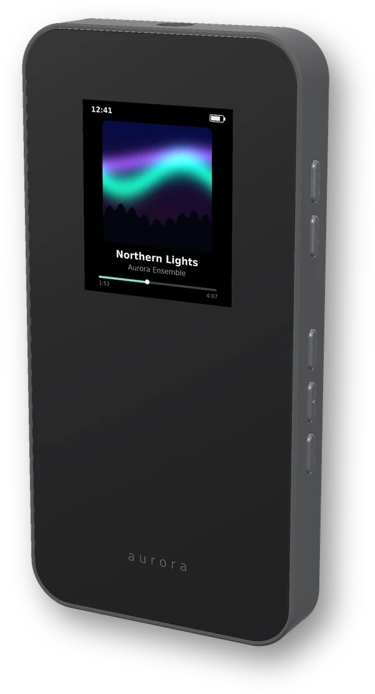
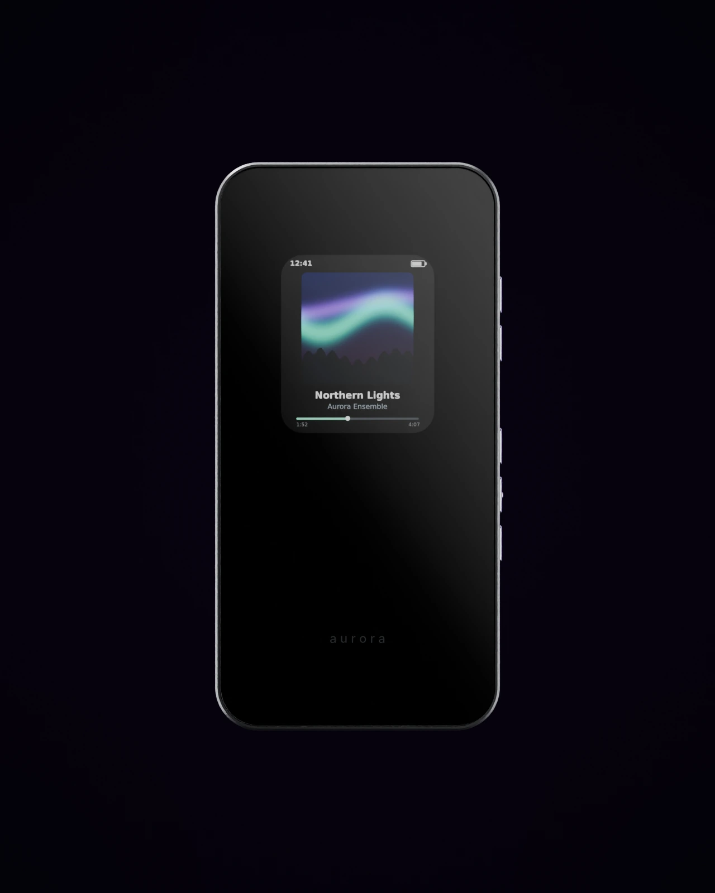
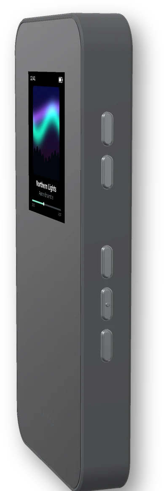
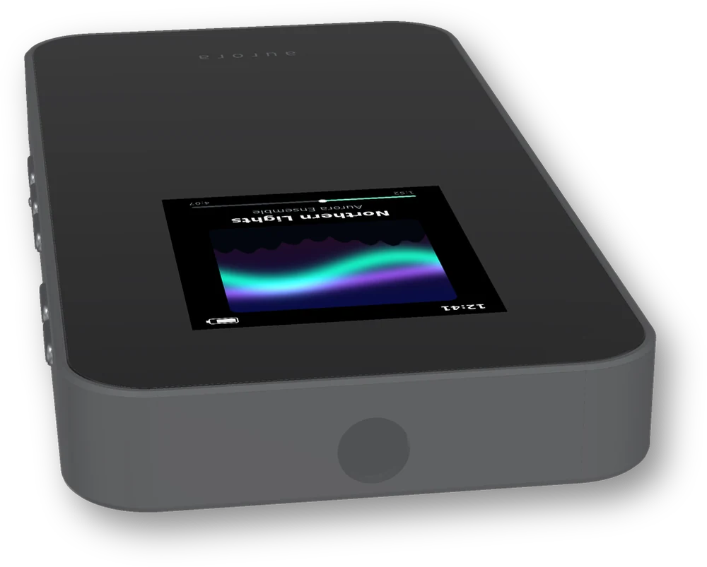
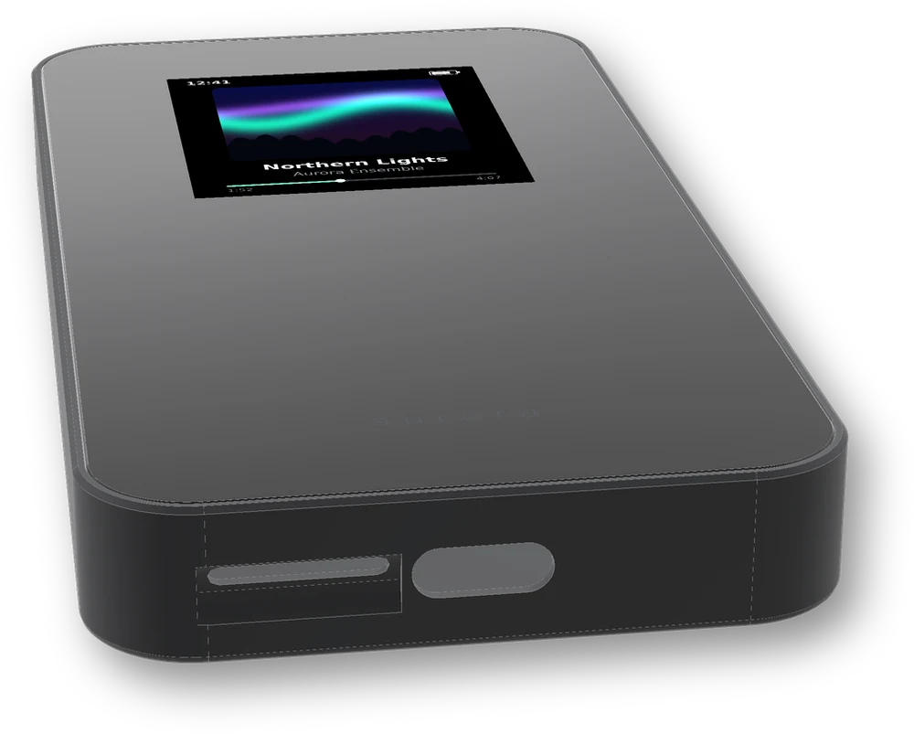
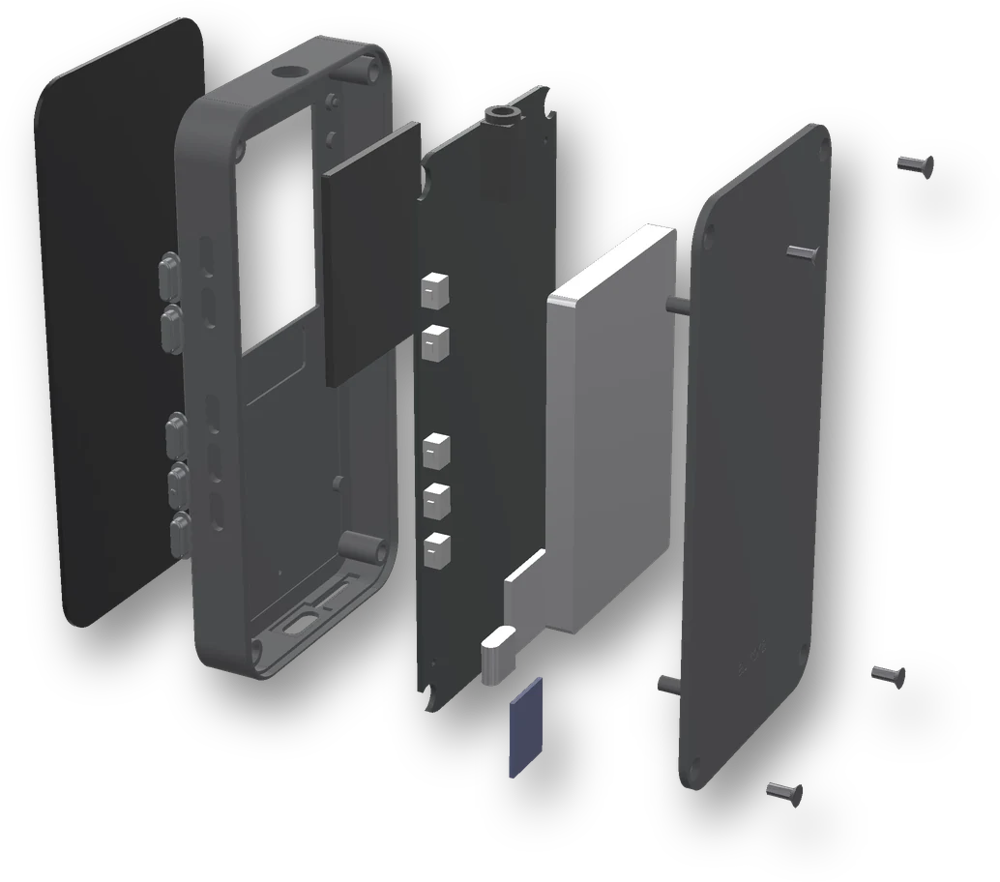

Your music,
in your pocket.
A small, dedicated music player for the songs you own. A colour screen with album art, five proper buttons, a headphone jack, and a microSD card you can swap. No phone, no internet, no subscription.

One screen. Five buttons. Nothing else.
Aurora Pocket is built to be picked up and played, not configured. A slim graphite body with rounded corners, a display that shows what you are listening to, and controls you can find without looking.
A colour display with album art
Cover art, title, artist, progress and battery on a 1.69-inch IPS colour screen (240 × 280). Menus stay simple: library, playlists, settings.
Buttons that click
Five aluminium buttons along one side, on real tactile switches: volume up and down, then previous, play/pause and next. Use it in a pocket, by feel. Hold play/pause to switch off.
Headphones in, music on
A 3.5 mm jack on the top end, USB-C and the microSD slot on the bottom. 52 × 104 × 11.3 mm, with every opening aligned and nothing sticking out.




Renders of the V1 enclosure design. The prototype will be 3D printed, so finish and colour may differ.
Built to be opened.
No development boards, no loose wires. One custom circuit board carries everything, and the case closes with four screws so it can be opened and repaired.
- Front lens. One piece of black glass-look lens across the whole face, with the screen behind it.
- Frame and buttons. The graphite frame holds the five aluminium keys and the openings at each end.
- Two-layer circuit board. Processor, audio chip, charger, connectors and switches on a single custom board.
- 1200 mAh battery with its own protection circuit, under a screwed-on back cover.

Wired, on purpose.
No Bluetooth means no pairing, no compression and no lag. Your files go straight from the card to a proper headphone amplifier.
- A real headphone output. A TI TLV320AIC3100 stereo DAC with a built-in headphone driver, designed for 16 to 32 Ω earbuds and headphones, not a line-out chip.
- Plays what you already have. MP3, WAV and FLAC. AAC (M4A) is planned.
- Optional EQ. A simple equaliser that runs in the audio chip’s own hardware, off by default.
- Quiet when it should be. Low background hiss and no pops when you plug in or press play.
From card to ears
A note on MP4 and M4A: they are containers, not formats. V1 plans to support AAC-LC audio inside M4A files. Apple Lossless (ALAC) and HE-AAC are not planned.
A week of listening on one charge.
With no radios to feed, almost all of the power goes to playing music. The screen sleeps when you don’t need it, and when it is off the player draws around 10 µA.
These figures are estimated from the power budget of the V1 design, not measured on a finished unit. They will be replaced with measured numbers once the prototype is tested.
of typical use at about 3 hours of listening a day (estimated)
Your songs, on a card you own.
The whole library lives on a removable microSD card, not locked inside the device. Want more room? Put in a bigger card.
Swap cards any time
The player notices when the card comes out and rescans when a new one goes in. FAT32 and exFAT, designed for cards up to 512 GB.
Album art from your files
Reads tags and embedded cover art, and keeps small cached thumbnails on the card so scrolling stays quick.
Shows up as a USB drive
Plug it into a computer or a phone that supports USB drives and drag music onto it. No app needed. For a big first load, a card reader is faster.
Works with Aurora
Playlists are plain files on the card, and the plan is for the Aurora app to send its playlists and favourites straight to it.
Updatable and recoverable
Firmware updates are a drag-and-drop file over USB-C. The recovery mode lives in the chip’s read-only memory, so a bad update can always be undone.
Open, like the app
The plan is to publish the schematics, board files, enclosure and firmware, so anyone can build one, fix one, or make it their own.
What it doesn’t do is the point.
Every extra radio and sensor costs battery, money and attention. V1 does one job well.
Wireless audio may be considered for a later hardware revision. V1 is not designed around it.
V1 prototype specs.
Design specifications for the first prototype. It has not been built or tested yet, so some details may change, and anything marked estimated comes from calculations, not measurements. Aurora Pocket is not certified for sale.
| Size | 52 × 104 × 11.3 mm |
|---|---|
| Body | Matte graphite enclosure with a full-face black lens and aluminium buttons. 3D-printed for the prototype |
| Display | 1.69-inch IPS colour, 240 × 280 (ST7789V2) |
| Controls | 5 tactile side buttons: volume up, volume down, previous, play/pause, next. Hold play/pause for power |
| Processor | Raspberry Pi RP2350 microcontroller, dual-core Arm Cortex-M33 at 150 MHz, 520 KB RAM, 8 MB flash |
| Audio output | 3.5 mm stereo headphone jack. TI TLV320AIC3100 DAC with integrated headphone driver, for 16 to 32 Ω headphones |
| Formats | MP3, WAV, FLAC. AAC-LC in M4A planned |
| Storage | Removable microSD, FAT32 or exFAT. Designed for cards up to 512 GB; the largest card has not been tested yet |
| USB | USB-C: charging, appears as a USB drive (USB 1.1 full speed, about 1 MB/s), settings over serial, drag-and-drop firmware updates |
| Battery | 1200 mAh Li-Po with protection circuit and temperature sensing. Up to ~45 h continuous playback with the screen off, ~25 h with it always on (estimated) |
| Charging | USB-C, 500 mA, about 3 h from empty (estimated). Plays while charging |
| Wireless | None. No Bluetooth, no Wi-Fi |
| Circuit board | Custom two-layer PCB, no development boards inside |
Where the build is.
Aurora Pocket is a hardware project in progress, not a product you can buy yet. Here is how far it has got.
- Done
Requirements
Scope fixed: wired-only, microSD, USB-C, five buttons, colour display.
- In progress
Electronics & PCB
Architecture and parts chosen; schematic, two-layer board layout and parts list underway.
- In progress
Enclosure & firmware
3D-printable case modelled around real switch and connector sizes (renders above); playback firmware.
- Next
First prototype
Order boards, assemble, and measure real battery life and audio quality.
Love the app? This is where it’s going next.
Aurora Pocket takes the same idea, your own music played beautifully, off the screen and into your pocket.